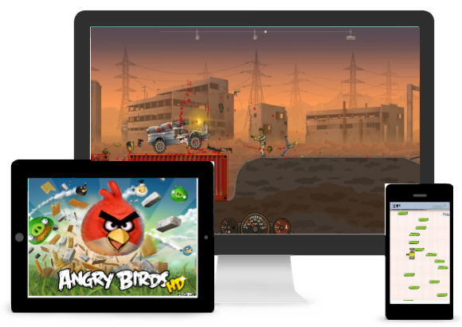

Здесь я буду говорить о мобильных и браузерных играх, делать на них обзоры и буду высказывать своё мнение.
☰ Меню
Мои обзоры игр и прохождения

Здесь я буду высылать ссылки на флешки ну возможно и сами игры.
1. Where is my water?
Это игра в жанре головоломки.
Задача дать воде добраться до конца трубы душевой кабины крокодила,
при этом можно собрать всех уток для дополнительных очков.
Кроме воды вам будет встречаться и кислота, не пускайте кислоту до крокодила,
а выбирайте путь чтобы кислота
спустилась или можете ее использовать для уничтожения зеленых водорослей.